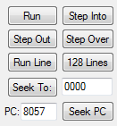
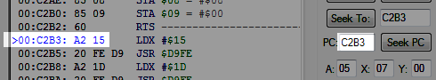

Содержание
Эти 8 кнопок в основном используются во время паузы эмулятора.

Снимает эмулятор с паузы. Аналогично горячей клавише Pause, но этой кнопкой нельзя поставить эмулятор на паузу.
Если после нажатия кнопки сработает брейкпоинт, эмулятор снова станет на паузу.
Используется для пошагового выполнения кода, обычно после срабатывания брейкпоинта. 1 нажатие = выполнить 1 инструкцию по адресу, указанному рядом с кнопкой Seek PC, после чего эмулятор снова станет на паузу.

Во время нажатия кнопки любые другие брейкпоинты не срабатывают и в списке не выделяются.
Если эмулятор не находится на паузе, то нажатие кнопки приостановит эмуляцию на 240-й сканлинии, где обычно выполняется бесконечный цикл в ожидании VBlank. Подробнее читай в разделах с графикой.
Нажатием кнопки можно выйти из текущей подпрограммы. Технически кнопка является брейкпоинтом с условием "остановить эмуляцию при выполнении инструкции

После нажатия кнопки будет выполнен оставшийся код в подпрограмме и выход из нее. А когда эмулятор станет на паузу, ты получишь итоговые состояния регистров и флагов, а также увидишь обновления в счетчике тактов и инструкций.
Если в процессе работы кнопки Step Out выход из текущей или из внутренней подпрограммы был совершен через способ наподобие PLA + PLA + RTS, условие кнопки по итогу так никогда и не выполнится (вероятно потому что цепочка выходов будет нарушена по логике эмулятора), хоть работа кнопки в действительности не прекращается.
Если во время выполнения кода подпрограммы после нажатия кнопки сработают какие-то активные брейкпоинты, то код остановится на месте срабатывания брейкпоинта вместо выхода из подпрограммы. Чтобы вновь попытаться выйти из подпрограммы, нужно нажать кнопку Run.
Кнопку Run нужно нажимать потому, что работа кнопки Step Out еще не закончена при срабатывании другого брейкпоинта. Если после нажатия Run других срабатываний брейкпоинтов не будет, эмулятор встанет на паузу после выхода из подпрограммы, поскольку условие Step Out будет выполнено.
Если вместо Run повторно нажать кнопку Step Out, вылезет окошко с предупреждением, что кнопка все еще в процессе работы. Выбрав "Да", ты подтвердишь нажатие кнопки Step Out, и условие кнопки будет выставлено повторно с учетом той подпрограммы, в которой ты оказался. Выбрав "Нет", ты отменишь свое нажатие кнопки.
Эта кнопка нужна для быстрого выполнения кода внутри подпрограммы. Если код остановился на инструкции

Если нажать на кнопку при выполнении инструкции, отличной от JSR, она сработает как кнопка Step Into.
Условие кнопки аналогично брейкпоинту с условием Execute на адрес, где расположена следующая после
Кнопка Step Over по принципу работает точно также, как и кнопка Step Out. Она тоже является брейкпоинтом с особым условием, и с соответствующими последствиями, касаемых паузы эмулятора, обновления данных и срабатывания других брейкпоинтов во время ее работы.
Поскольку код не всегда совершает выход из подпрограммы, в которую он вошел, или после выхода может оказываться не там, где ты того ожидаешь, условие кнопки может так и не выполниться, и эмуляция игры просто продолжится как при нажатии кнопки Run. Однако условие брейкпоинта кнопки все еще будет активно.
Иногда это приводит к тому, что Debugger может неожиданно приостановить эмуляцию, когда условие кнопки наконец выполнится, и будет казаться, что Debugger остановил игру просто так.
Проматывает эмуляцию игры вперед на 1 сканлинию (в районе 114 тактов), после чего эмулятор становится на паузу.
Если эмулятор не находится на паузе, то нажатие кнопки приостановит эмуляцию на 241-й сканлинии.
Если во время работы кнопки срабатывают другие брейкпоинты, нужно нажать кнопку Run как в случае с кнопкой Step Out. Если вместо Run повторно нажать Run Line, работа кнопки начнется заново (без дополнительных предупреждений).
Проматывает эмуляцию игры вперед на 128 сканлиний (примерно 14600 тактов). Работает по тому же принципу, что и кнопка Run Line.
Если эмулятор не находится на паузе, то нажатие кнопки приостановит эмуляцию на 106-й сканлинии (для PAL на 64-й).
Кнопка работает как закладка. Ты можешь кликать по 16-битным адресам в Debugger'е, и адрес будет автоматически скопирован в эту кнопку. Затем нажми на кнопку для перехода по этому адресу. А чтобы не потеряться, нажми на кнопку Seek PC для возврата к месту выполнения кода (если эмулятор на паузе).

Например, ты можешь посмотреть код, который находится внутри подпрограммы, без необходимости выполнять инструкцию с прыжком на эту подпрограмму ради просмотра ее кода.
В эту кнопку можно вводить сокращения RST, NMI (или VBL) и IRQ для перехода на адреса обработчиков сооветствующих прерываний процессора.
Правила записи адреса аналогичны записи адреса при создании брейкпоинта, с соответствующими последствиями.
Эта кнопка работает только на паузе эмулятора. В ней указан адрес, по которому собирается выполниться следующая инструкция. Слева от такого адреса находится стрелочка, а байты этой инструкции, вместе с адресом и номером банка PRG, выделены синим цветом.

Если эмулятор не находится на паузе, нажатие кнопки ни к чему не приведет.
Стрелочка и выделение текста синим цветом не отображаются, если эмулятор не стоит на паузе.
Адрес, записанный в кнопке, можно менять вручную, и затем нажать на эту кнопку, чтобы переместить место выполнения кода (стрелочку) на другой адрес. Подходит для тестирования кода.

Обычно удобнее кликнуть на 16-битный адрес в Debugger'е слева от инструкции и скопировать его через Ctrl + C, затем дважды кликнуть по адресу в поле ввода Seek PC для его выделения и вставить новый адрес через Ctrl + V, нежели записывать этот адрес вручную.
Debugger сразу сообщит об ошибке при попытке ввода недопустимого символа.